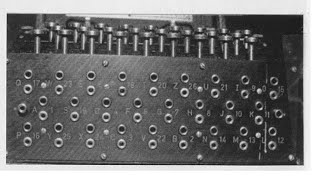
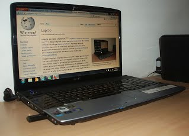

The First Generation (1940's to early 1950's)
When electronic computers where first introduced in the 1940's they were created without any operating systems.
All programming was done in absolute machine language, often by wiring up plugboards to control the machine's basic functions.
During this generation computers were generally used to solve simple math calculations, operating systems
were not necessarily needed.

The Second Generation (1955-1965)
The first operating system was introduced in the early 1950's, it was called GMOS and was
created by General Motors for IBM's machine the 701. Operating systems in the 1950's were called
single-stream batch processing systems because the data was submitted in groups. These new machines were called mainframes,
and they were used by professional operators in large computer rooms. Since
there was such as high price tag on these machines, only government agencies or large corporations were able to afford them.
.jpg)
Third Generation (1965-1980)
By the late 1960's operating systems designers were able to develop the system of multiprogramming in which a computer
program will be able to perform multiple jobs at the same time.The introduction of multiprogramming was a major part in the
development of operating systems because it allowed a CPU to be busy nearly 100 percent of the time that it was in operation.
Another major development during the third generation was the phenomenal growth of minicomputers, starting with the DEC PDP-1 in 1961.
The PDP-1 had only 4K of 18-bit words, but at $120,000 per machine (less than 5 percent of the price of a 7094),
it sold like hotcakes.
These microcomputers help create a whole new industry and the development of more PDP's. These PDP's helped lead to the creation of
personal computers which are created in the fourth generation.

The Fourth Generation (1980-Present Day)
The fourth generation of operating systems saw the creation of personal computing.
Although these computers were very similar to the minicomputers developed in the third generation, personal computers cost a
very small fraction of what minicomputers cost. A personal computer was so affordable that it made it possible for a single
individual could be able to own one for personal use while minicomputers where still at such a high price that only corporations
could afford to have them. One of the major factors in the creation of personal computing was the birth of Microsoft and the Windows
operating system. The windows Operating System was created in 1975 when Paul Allen and Bill Gates had a vision to take personal computing
to the next level. They introduced the MS-DOS in 1981 although it was effective it created much difficulty for people who tried to
understand its cryptic commands. Windows went on to become the largest operating system used in techonology today with releases of
Windows 95, Windows 98, WIndows XP (Which is currently the most used operating system to this day), and their newest operating system
Windows 7. Along with Microsoft, Apple is the other major operating system created in the 1980's. Steve Jobs, co founder of Apple,
created the Apple Macintosh which was a huge success due to the fact that it was so user friendly. Windows development throughout the
later years were influenced by the Macintosh and it created a strong competition between the two companies. Today all of our electronic
devices run off of operating systems, from our computers and smartphones, to ATM machines and motor vehicles. And as technology advances,
so do operating systems.
